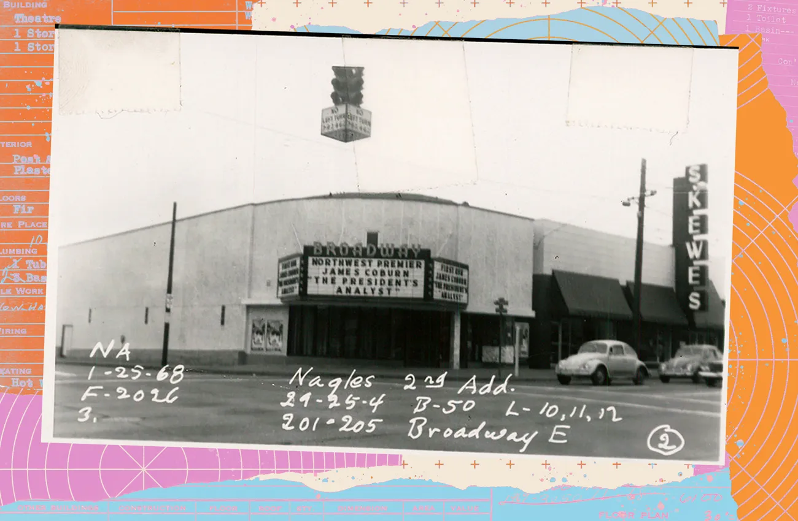

In February, news broke that McDonald’s had filed for a permit to spend $750,000 to turn the old Broadway Theater (once our most fashionable Rite Aid) into a fast food restaurant.
We groaned a collective groan. McDonald’s doesn’t just move in. They turn storefronts into a wash of grays and blacks, with ever-growing golden arches. In our March issue, Emily Nokes begged for a little more imagination: “‘Preservation’ is a loaded concept when we need max efficiency in this expensive-as-fuck city of ours,” she wrote. “But must every choice we make include no rizz whatsoever? If we need a neighborhood sacrifice, why not tear down the US Bank across the street?” It could be a venue, a skating rink, an indoor sculpture park, a magic show emporium.
Or, imagine it’s a McDonald’s, she wrote. But we take inspiration from the residents of New Hyde Park, NY, who rallied to save a historic mansion
in 1985 that was facing the same fate. The home earned historic status in 1988, and McDonald’s had to restore the façade to its 1926 beauty before it reopened as a McDonald’s in 1991.
In The Stranger’s newsroom, we all agreed: In a 7000 square-foot space on a main thoroughfare, our chances of getting something other than a national
borhood always gets to see the iconic Broadway Theater marquee.
Our main option for preserving the structures in this city that we love is through the Landmarks Preservation Board—a part of Seattle’s Department of Neighborhoods that has long been a frustrating force for urbanists in the city. Since its founding in 1973, the board has designated more than 400 Seattle sites, buildings, boats, cars, and street clocks as landmarks. And with that designation comes protection: from demolition, major alterations, or capitalism in general.
According to our municipal code, something can become a landmark for a handful of reasons: (1) if it’s associated with a significant historical event, (2) if it’s tied to an important person, (3) if it’s significant to the heritage of a specific community, (4) if it captures a specific architectural style, architect, or builder, or (5) because it’s an “identifiable visual
feature of its neighborhood… and contributes to the distinctive quality or identity of such neighborhood or the City.”
The theater’s architecture is ordinary. Aside from an unfortunate string of deaths associated with the Theater, we can’t tie it to any historical events. And the most important person to speak there was a candidate for coroner. But we think the marquee fits right into number five: an identifiable feature of a neighborhood. And that’s what we’re going to use to try to protect it.
That marquee is the welcome sign for Capitol Hill. It’s the first thing you see when you crest the hill on Olive Way, or come out of the light rail station. In a neighborhood that’s rapidly developing, it’s a reminder of the neighborhood’s history, and our choice to preserve that for decades. Because it’s fun. Because it’s whimsical. Because it’s rare to get to see anyone’s name in lights. And it’s certainly an “identifiable visual feature” of